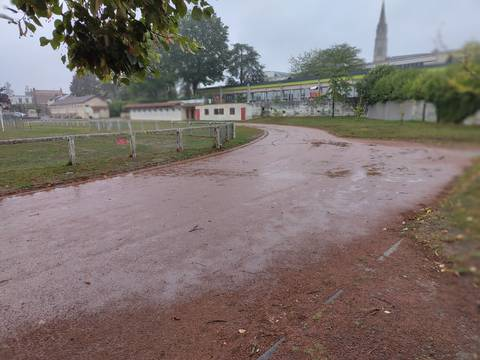
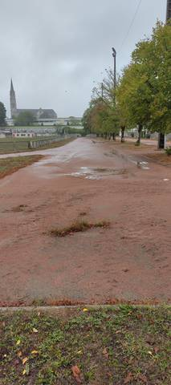
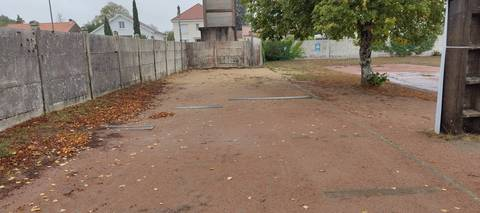
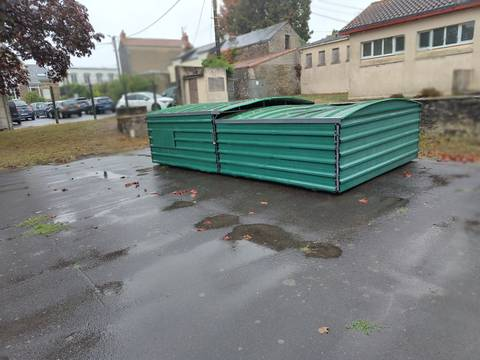
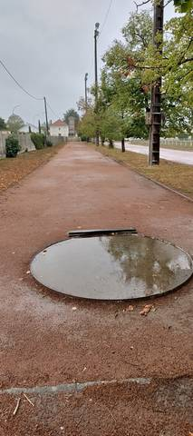

{kind=link}
{kind=link}
{kind=link}
{kind=link}
{kind=link}
J'y suis passé un jour de pluie, et c'est exactement là que cette piste montre sa limite : la cendrée prend l'eau, les flaques s'installent sur l'anneau et le cercle de lancer du poids était complètement noyé. Par temps sec elle est clairement praticable, on y tourne sans problème et j'imagine qu'elle fait 400 m, même si je ne l'ai pas mesurée. Aucun couloir n'est tracé : c'est une piste de footing et d'endurance plutôt qu'une piste où travailler au chrono. Les trois agrès sont là, et c'est appréciable pour du terrain communal : le sautoir en hauteur, dont le tapis est rangé sous deux abris métalliques cadenassés, le sautoir en longueur avec son sable en place et bien exploitable, et l'aire de lancer du poids avec son butoir. L'accès est libre en temps normal, mais ça peut se fermer : elle l'a été cet été pour risque de dégradations, avec un écriteau à l'entrée. Une bonne piste de proximité pour un footing, à ne pas privilégier dès qu'il pleut.
Complexe Vertou Centre
Boulevard des Sports, 44120 Vertou · Loire-Atlantique
Complexe Vertou Centre est un équipement d'athlétisme situé à Vertou (Loire-Atlantique), en Pays de la Loire. Il dispose d'une piste de 400 m en cendrée / stabilisé. On y trouve sautoir longueur, sautoir hauteur et lancer du poids. Le site propose des vestiaires et des douches. L'accès est libre.
Photos





Les sautoirs et les aires de lancer sont ce que la donnée publique décrit le plus mal, et ce qu'on photographie le moins. Un gros plan du sol, une perche bâchée, un bac de sable envahi : chacun ajoute ce qu'aucun champ ne porte.
Envoyer une photoSans compte GitHubPiste
- Revêtement
- Cendrée / stabilisé
- Développement
- 400 m
- Type de piste
- Anneau de stade d'athlétisme
- Configuration
- Plein air
- Dernière rénovation
- 2003
Agrès recensés
- Sautoir longueur
- Sautoir hauteur
- Lancer du poids
Accès & services
- Accès libre
- Oui
- Éclairage
- Non
- Vestiaires
- Oui
- Douches
- Oui
- Sanitaires
- Oui
- Tribunes
- 236 places
Visite du 29 août 2026 : on rejoint l'anneau sans rien franchir, alors que le recensement déclare l'équipement en accès non libre. C'est l'état habituel d'après le contributeur, qui connaît le site — mais l'ouverture n'est pas garantie toute l'année : la piste a été fermée à l'été 2026 pour risque de dégradations, un écriteau l'annonçait à l'entrée. Aucun panneau d'horaires ni de règlement n'a été vu le jour de la visite, et rien n'affichait de créneaux réservés à un club ou aux scolaires. Les quatre vestiaires, les douches et les sanitaires que déclare le recensement n'ont pas été vérifiés : le bâtiment qui borde la piste n'a été vu que de l'extérieur, et sa fermeture éventuelle n'a pas été testée.
Avis des athlètes
Visite sur place le 29 août 2026, sous la pluie. Revêtement confirmé au sol : cendrée, conforme à ce que déclare le recensement — un stabilisé rouge brique, foulé sur la ligne droite comme dans les virages. C'est aussi ce qui fait sa faiblesse : la cendrée prend l'eau et ne l'évacue pas. Le jour de la visite, des flaques larges s'étalaient sur toute la largeur de l'anneau en sortie de virage, et le cercle de lancer du poids était entièrement sous l'eau. Par temps sec la piste est franchement courable ; sous la pluie, elle se détrempe et n'est pas celle qu'on choisit. Aucun couloir n'est tracé. Le recensement n'en renseigne aucun pour ce site, et c'est exact : la cendrée est nue, sans lignes ni bordures de couloir, les seules marques blanches visibles appartenant au terrain de football central. On ne peut donc pas y travailler au couloir ni y placer un départ précis. Sur le développement, la fiche conserve les 400 m déclarés au recensement : aucun tour n'a été mesuré le jour de la visite, ni au décamètre ni à la montre. L'anneau paraît de dimension normale, mais rien de ce qui a été constaté ne permet de le confirmer ni de le contredire. Une mesure au décamètre en couloir 1, à 30 cm de la bordure, reste à faire. L'anneau est en plein air, tracé autour d'un terrain de football en herbe entretenu, séparé de la piste par une clôture basse portant un panneau « pelouse interdite au public ». La cendrée est envahie d'herbe par endroits, en touffes isolées au milieu de la piste et en bande continue le long de la bordure béton. Des mâts sont alignés le long de l'anneau ; il n'a pas été possible de déterminer s'ils éclairent la piste ou seulement la voirie voisine, et la fiche s'en tient donc au recensement, qui déclare le site sans éclairage. Les 236 places de tribune déclarées n'ont pas été recherchées. Trois agrès ont été vus, et trois seulement, là où le recensement n'en déclare aucun. Le sautoir en hauteur existe : son tapis est rangé sous deux abris métalliques verts cadenassés, posés sur une aire en enrobé en bordure de piste — l'agrès est donc bien présent, mais inutilisable sans ouvrir les abris. Le sautoir en longueur est exploitable : piste d'élan en cendrée, planches d'appel métalliques affleurantes échelonnées au sol, fosse de sable large adossée à un mur de clôture béton, sable en place. L'aire de lancer du poids est un cercle béton muni de son butoir, implanté en bord d'anneau ; noyé sous une flaque le jour de la visite, il est utilisable au sec. Aucune perche, aucune cage de disque ou de marteau, aucun couloir de javelot, aucune rivière de steeple, aucune planche de triple n'ont été repérés. Contexte : l'installation est en plein bourg, boulevard des Sports, mitoyenne du groupe scolaire Saint-Martin–Saint-Joseph, dont l'annuaire de l'Éducation nationale situe un site au 12 boulevard des Sports. La piste n'est pas pour autant dans une enceinte scolaire : le complexe est communal et son entrée donne sur la voie publique. Le clocher du bourg est visible en fond de plusieurs photos, ce qui aide à situer l'anneau.
Autres sites du département
- Complexe Sevre et Maine
- Parc Sportif des Echalonnieres
- Institut Médico-Éducatif (IME) Le Val de Sèvre
- Complexe Sportif de l'Ouche Quinet
- Lycee de la Herdrie
- Stade Louis Bartra
Signaler une erreur ou compléter la fiche
Réf. I442150012 · Source : Data ES + communauté — Data ES, ministère chargé des Sports, Licence Ouverte 2.0. Les données sont déclaratives et peuvent être incomplètes : vérifiez les conditions d'accès avant de vous déplacer.